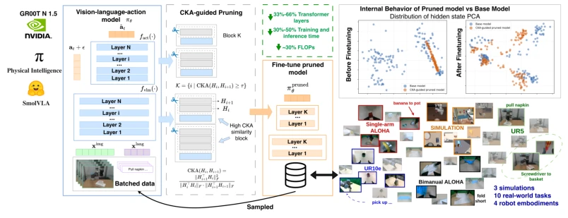
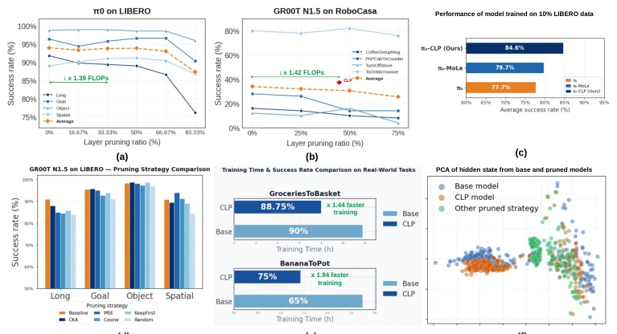

The core viewpoint of this paper is straightforward: current VLA models (such as π0 [4] and GR00T [5]) have too many layers, with many layers purely "padding". The authors did not employ fancy dynamic routing, but directly used CKA to calculate similarity and cut off duplicate layers. This approach is indeed aggressive, cutting training time by nearly half, significantly speeding up inference, and without collapsing performance, even improving slightly with less data. However, this method is essentially "brute-force pruning". Although simpler than those implementing dynamic routing [14, 15], it does not consider that layers of different modalities (vision vs. action) may have different redundancy levels, belonging to a "one-size-fits-all" approach. Additionally, it only verified the fine-tuning stage, whether this can be done in the pre-training stage remains unknown. Overall, it saves some costs for the compute-anxious robotics community, but do not expect it to solve all efficiency problems, after all, "pruning" too much might even prune away the brain.
With the explosion of VLA models such as π0 [4] and GR00T [5], although robot control capabilities are strong, parameter counts are in the billions, leading to extremely high costs for downstream fine-tuning and real-time inference. Existing optimization solutions are mainly divided into three categories: first, training-independent acceleration, such as OpenVLA-OFT [6] or SpecPrune-VLA [9], which mainly optimize token processing during inference and cannot reduce expensive fine-tuning training costs; second, designing lightweight architectures from scratch, such as RoboMamba [10], but this may lose the generalization ability of large models; third, training-adaptive dynamic routing, such as DeeR-VLA [14] and MoLe-VLA [15], although they can dynamically skip layers, they introduce complex auxiliary modules and additional training objectives, prone to overfitting. This paper aims to solve a key problem: can redundant layers be directly removed before fine-tuning, reducing training costs without sacrificing performance? Existing work lacks deep structural redundancy analysis for continuous control VLA.
The method is named CLP (CKA-guided Layer Pruning). The overall process is divided into three stages: calibration, pruning, and fine-tuning. First, use a small amount of calibration data (calibration set) to perform a single forward pass on the pre-trained VLA model, extracting hidden states of each Transformer layer. Next, utilize Centered Kernel Alignment (CKA) to calculate representation similarity between adjacent layers. A CKA score close to 1 means two layers' features highly overlap, indicating redundancy. The authors cluster continuous high-similarity layers into blocks, keep the first layer of each block as an anchor, and remove subsequent redundant layers. This step is static, requiring no extra parameters. Finally, perform downstream fine-tuning on the streamlined architecture. Innovations lie in: 1) No need to load the full model to learn routing strategies, relying only on CKA diagnosis; 2) Permanent depth compression, rather than dynamic skipping, reducing control overhead during inference; 3) Proved that structural compression can act as regularization in the fine-tuning stage, improving generalization ability under few samples. Specifically, the algorithm segments the network by setting a threshold τ, keeps the initial layer r(B) for each block B, adds remaining layers to a candidate pool, and then selects the removal set based on similarity TopK. This structural pruning directly reduces trainable parameters and FLOPs, and does not require modifying the model architecture or introducing auxiliary routing modules, making the fine-tuning process more efficient.

Figure 1: Overview of the proposed CLP framework. CLP prunes representationally redundant transformer layers via CKA, reducing network depth by up to 66% and training/inference cost by up to 50%. Fine-tuning restores the latent geometry of the compressed model, enabling competitive performance acros
Experiments cover 3 simulation benchmarks (LIBERO, RoboCasa, SimplerEnv) and 10 real-world tasks (involving UR10, UR5, ALOHA single/dual arms). Baselines include the original model and dynamic pruning methods such as MoLe-VLA [15]. Results show that on LIBERO, training time after CLP pruning decreased by about 28%, success rate was flat or slightly higher; under 10% data, CLP success rate was 84.6%, better than baseline 77.7%. In real tasks, average success rate increased from 73.5% to 75.9%, training speed increased 1.94 times. Ablation experiments show CKA is better than MSE or random pruning. It was found that fine-tuning after pruning can recover latent geometric structure, and performs better with small data, confirming the rationale of removing redundant layers. Additionally, on SimplerEnv, training time dropped from 22.9 hours to 15.7 hours, success rate improved. This proves the method's generalizability under different robot morphologies and task types, and can effectively mitigate overfitting problems caused by data scarcity.

Figure 3: Analysis of CLP evaluation across benchmarks and real-world tasks. (a) Success rate of π0 on LIBERO with different layer pruning ratio; (b) Success rate of GR00T N1.5 on RoboCasa across pruning ratios; (c) Comparison with dynamic layer skipping method (MoLe-VLA [15]) vs ours; (d) Compariso